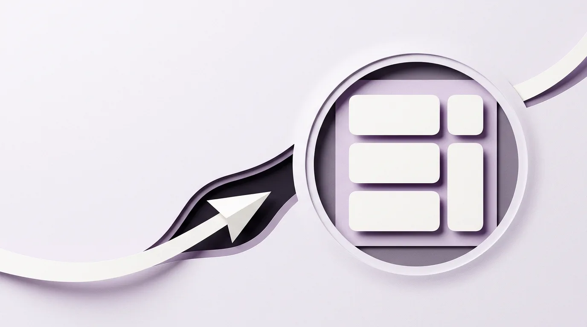

Uji coba desain (playtesting atau usability testing) tidak butuh produk yang sudah jadi mulus atau laboratorium mahal; perlihatkan prototipe kasar sedini mungkin kepada lima orang awam, lalu diam dan amati apa yang mereka lakukan tanpa mendikte aturan. Langkah awal ini membongkar hampir seluruh titik kebingungan antarmuka sebelum kamu telanjur menulis ratusan baris kode yang mahal untuk dibongkar ulang.
Setiap pembuat website pasti pernah merasakan kejanggalan yang sama. Selama berhari-hari kamu menyusun tata letak, memilih kontras tombol, dan merapikan formulir sampai seluruh alurnya terasa gamblang di kepalamu. Begitu halaman itu dibuka pengunjung baru, kursor mereka berhenti di tengah layar, menggulir bolak-balik dengan wajah bingung, lalu mengklik tautan yang sama sekali tidak kamu duga. Fenomena ini disebut kutukan pengetahuan (curse of knowledge): karena kamu yang membangun ruangannya, kamu lupa bagaimana rasanya masuk tanpa peta.
Bayangkan bedanya seperti tuan rumah yang sudah hafal letak setiap sakelar lampu di lorong rumahnya sendiri bahkan saat listrik padam, dibandingkan dengan tamu yang baru pertama kali melangkah masuk dan harus meraba dinding dalam gelap. Bagi tuan rumah, tidak ada yang aneh dengan posisi sakelar di balik tirai. Bagi tamu, ruangan itu langsung terasa membingungkan.
Batas analogi rumah ini perlu dicatat: tamu di dunia nyata umumnya masih punya rasa sungkan sehingga mau bertanya letak lampu, sedangkan pengunjung website tidak berutang kesabaran apa pun. Begitu tersesat beberapa detik, mereka langsung menutup tab tanpa pernah mengirim pesan perpisahan.
Mengabaikan titik buta itu membawa ongkos nyata. Pengunjung pergi diam-diam sebelum menyelesaikan transaksi, biaya perbaikan pascarilis membengkak berkali-kali lipat, dan kotak masuk bantuan dibanjiri keluhan berulang.
Pada 14 Desember 2011 (diunggah ke YouTube 19 Mei 2012), kanal Extra Credits merilis episode sekitar enam menit berjudul Playtesting - How to Get Good Feedback on Your Game. Walau membicarakan desain game, jebakan ego dan disiplin observasinya berlaku langsung pada desain website. Di sini kita menyandingkan pelajaran Extra Credits itu dengan kurva biaya Barry Boehm, panduan Steve Krug, matematika lima pengguna Jakob Nielsen, serta think-aloud protocol agar kamu siap menguji desainmu hari ini.
Rasa Malu dan Ego Pembuat yang Bikin Kita Menunda Uji Coba
Sebagian besar proyek web gagal melakukan usability testing bukan karena ketiadaan perangkat lunak rekam layar atau anggaran riset. Penghalang paling keras justru tinggal di kepala pembuatnya sendiri: rasa malu memperlihatkan barang yang belum selesai. Selama draf masih tersimpan rapat di kanvas Figma atau server lokal, desain itu terasa utuh dan sempurna di dalam bayangan.
Begitu layar diserahkan kepada orang lain, ilusi kendali itu langsung diuji. Ketakutan mendengar kalimat "ini maksudnya apa ya?" membuat banyak desainer dan developer menunda uji coba sampai tahap akhir, tepat ketika struktur kode sudah telanjur mengeras.
Kenapa Menguji Karya Sendiri Terasa Sama Rentannya dengan Membacakan Puisi
Extra Credits membuka pembahasan playtesting dengan perbandingan yang sangat mengena: menyerahkan rancangan buatan sendiri kepada orang lain terasa serentan membacakan puisi pribadi atau memainkan lagu ciptaan sendiri di hadapan penonton. Karya itu membawa waktu lembur, pilihan pribadi, dan harga diri pembuatnya.
Ketika mata kita terikat terlalu erat pada rancangan, setiap kebingungan penguji otomatis diterjemahkan otak sebagai serangan pribadi. Penguji mengerutkan dahi saat membaca label menu; otak pembuat langsung membisikkan bahwa ia gagal menjadi desainer. Akibatnya, pembuat memilih bersembunyi di balik kesibukan kosmetik seperti memoles gradien warna, mengganti jenis huruf, atau menyusun animasi tombol sambil meyakinkan diri bahwa prototipenya belum siap dilihat orang.
Langkah profesional pertama dalam usability testing adalah memisahkan ego dari objek yang sedang diuji. Bedanya dengan puisi yang selesai sebagai ekspresi personal, prototipe adalah hipotesis kerja yang memang ditaruh di meja di antara kamu dan penguji untuk dibedah. Saat sebuah tombol gagal dimengerti, itu bukan vonis bahwa kamu buruk; itu temuan gratis yang baru saja menyelamatkan produkmu sebelum dilihat ratusan calon pengguna sungguhan.
Jebakan Membela Diri dengan Kalimat Nanti Juga Dirapikan
Ujian ego yang sesungguhnya datang tepat di detik pertama penguji mulai bingung. Bayangkan skenario yang kerap terjadi saat menguji halaman pendaftaran atau pembayaran. Bagi pembuatnya, tombol besar bertuliskan "Lanjut" di bagian bawah ringkasan paket terasa sudah sangat wajar dan tidak butuh tambahan teks apa pun.
Namun, ketika seorang penguji awam membuka layar itu, gerak kursor mouse miliknya berhenti mendadak tepat di atas tombol "Lanjut". Ia menggulir ke atas, turun lagi mencari rincian biaya tambahan, menghela napas pendek, lalu menoleh ragu sambil bertanya, "Kalau saya klik ini, saldo langsung terpotong atau masih ada halaman konfirmasi?"
Di detik inilah banyak pembuat langsung bersikap defensif. Mulut refleks menyela dengan dalih: "Oh, itu memang belum selesai, nanti di versi rilis ada catatan kecilnya di bawah" atau "Abaikan saja warnanya, itu masih aset sementara." Extra Credits mengingatkan keras agar kebiasaan mencari alasan ini dihentikan total.
Sekali kamu membela diri di tengah sesi, dua kerugian terjadi bersamaan. Pertama, penguji langsung merasa tidak enak karena mengira ia baru saja menyinggung perasaanmu, sehingga sisa komentarnya berubah menjadi pujian sopan yang tidak berguna. Kedua, kamu membuang bukti kecemasan pengguna yang nyata. Alih-alih berkilah, terima kebingungan itu dengan wajah tenang, ucapkan terima kasih, dan catat apa adanya bahwa label "Lanjut" memicu rasa takut salah bayar.
Kenapa Uji Coba Prototipe Kasar Jauh Lebih Murah daripada Revisi Setelah Rilis
Banyak tim web memperlakukan pengujian pengguna layaknya inspeksi akhir sebelum pita peresmian digunting. Pola pikir ini terbalik dari ekonomi rekayasa perangkat lunak. Saat seluruh tampilan sudah dikodekan dan terhubung ke basis data, mengubah urutan dua langkah formulir berarti membongkar ulang logika validasi, jalur API, dan pengujian regresi, jauh lebih rumit daripada menggeser kotak di layar.
Keterlambatan menguji asumsi sejak awal menjadi salah satu pemicu utama proyek website terjebak revisi panjang dan lembur pada masa praproduksi. Semakin awal kamu membawa draf mentah ke depan mata orang luar, semakin murah ongkos setiap kesalahan yang terungkap.
Mulai Menguji Sejak Layar Baru Berisi Kotak Polos
Extra Credits menyampaikan prinsip tegas: tidak pernah ada kata terlalu dini untuk melakukan playtesting. Bahkan ketika rancanganmu baru berupa kotak-kotak polos yang bergerak di layar (squares moving around on a screen), inti pengalaman pengguna sudah bisa diuji.
Dalam desain website, padanan kotak polos itu adalah sketsa kertas dengan spidol tebal atau wireframe hitam-putih yang bisa diklik. Kamu belum butuh ilustrasi akhir, sistem warna lengkap, ataupun kode produksi untuk menguji dua hal paling rawan gagal pada sebuah situs: apakah pengunjung paham isi halaman ini dalam lima detik, dan apakah mereka tahu ke mana harus mengklik untuk mencapai tujuan utamanya.
Menguji prototipe kasar justru membawa keuntungan psikologis yang sering luput disadari. Ketika penguji disodori tampilan high-fidelity yang sudah mengilap, mereka segan mengkritik struktur besarnya karena terlihat seperti hasil kerja berminggu-minggu; akhirnya masukan mereka menyusut menjadi komentar kecil soal warna tombol. Sebaliknya, di depan sketsa kotak kasar, penguji merasa leluasa berkata jujur bahwa urutan halamannya membingungkan atau ada informasi penting yang hilang.

Kurva Biaya Perubahan dari Riset Boehm hingga Peringatan Steve Krug
Dorongan untuk menguji sedini mungkin berangkat dari hitungan biaya yang nyata. Dalam buku rujukan klasik Software Engineering Economics (1981), Barry Boehm memetakan kurva biaya perubahan (Cost-of-Change Curve) yang kemudian sering diringkas bersama laporan IBM Systems Sciences Institute sebagai aturan 1-10-100: memperbaiki kekeliruan kebutuhan atau desain di tahap awal menjadi patokan dasar 1x, melonjak sekitar 10x saat kesalahan baru ketahuan di tengah pengkodean, dan dapat menembus 100x begitu produk telanjur dirilis. Angka batas atas 100x itu terutama berlaku pada sistem berskala besar atau kritis; pada proyek kecil dan iteratif kurvanya lebih landai, tetapi ongkos revisi pascarilis tetap jauh lebih mahal daripada memperbaiki sketsa awal.
| Tahap Temuan Masalah | Beban Biaya Relatif (Kurva 1-10-100) | Apa yang Harus Diubah | Risiko Jika Baru Ditemukan di Sini |
|---|---|---|---|
| Sketsa Kertas & Wireframe | 1x (Patokan dasar) | Menghapus garis pensil, menggeser kartu teks, atau mengganti kata label dalam hitungan menit. | Hampir nihil; pembuat belum terikat emosi ataupun tenaga pada kode. |
| Tahap Pengkodean Aktif | Sekitar 10x | Menulis ulang komponen HTML/CSS/JavaScript, mengubah skema alur data, dan mengulang uji regresi. | Jadwal rilis meleset, tim mulai lelah, dan kompromi tambal sulam mulai masuk ke kode. |
| Pascarilis / Produksi | Hingga 100x | Migrasi data pengguna aktif, penulisan ulang panduan, pembaruan darurat, dan penanganan keluhan. | Kepercayaan pengunjung merosot dan tiket bantuan menumpuk setiap hari. |
Biaya pascarilis itu tidak berhenti di tagihan jam kerja developer. Setiap kebingungan antarmuka yang lolos ke produksi akan mendarat di meja layanan bantuan, seperti terlihat ketika kita membaca antarmuka dari sudut pandang tiket dukungan pelanggan. Pertanyaan berulang seperti "tombol simpan di mana?" adalah pajak rutin yang dibayar organisasi karena melewatkan uji prototipe.
Supaya pengujian tidak macet oleh birokrasi, Steve Krug dalam buku Rocket Surgery Made Easy (2010) menyarankan disiplin ramping: jadwalkan uji coba mandiri satu pagi per bulan (a morning a month) dengan tiga penguji per putaran, dimulai sejak sketsa kasar paling awal. Pendekatan Krug tegas: tiga sesi uji singkat yang rutin dijalankan tiap bulan jauh mengungguli rencana riset raksasa yang terus tertunda sampai tahun depan.
Aturan Emas Saat Menjalankan Sesi Playtesting dan Usability Testing
Mengundang penguji baru separuh pekerjaan. Data pengujian sering bias ketika fasilitator tanpa sadar menyetir tindakan penguji sejak menit pertama, padahal pengujinya berniat jujur. Satu kalimat petunjuk kecil sudah sanggup merusak keaslian seluruh observasi.
Tugas terberat selama sesi berlangsung adalah menahan diri: tidak menyela saat penguji bingung, jeli membaca gerak kecil, dan peka melihat bagian yang ternyata menarik minat mereka di luar dugaan.
Menahan Diri untuk Tidak Menjelaskan Aturan Sebelum Penguji Mencoba
Aturan pertama Extra Credits bersifat mutlak: bicaralah sesedikit mungkin kepada penguji sebelum mereka mulai berinteraksi. Memberi penjelasan panjang tentang cara kerja layar, arti setiap ikon, atau urutan langkah sebelum mereka menyentuh mouse akan merusak dan membiaskan seluruh data sesi.
Alasannya langsung menyentuh kenyataan di dunia nyata. Setelah website-mu mengudara di internet, kamu tidak akan duduk di sebelah setiap pengunjung untuk membisikkan, "Kalau mau cari tarif pengiriman, klik dulu ikon garis tiga di kanan atas ya." Jika kamu membocorkan letak menu saat sesi uji, kamu kehilangan kesempatan langka untuk mengetahui apakah manusia normal benar-benar menemukan tombol itu tanpa bantuan.
Berikan hanya dua hal di pembukaan sesi: jaminan bahwa yang sedang diuji adalah website-nya (bukan kepintaran mereka) dan satu skenario tugas konkret tanpa menyebut nama tombol, misalnya "Bayangkan kamu ingin mencari paket konsultasi untuk tim beranggotakan empat orang dan melihat estimasi biayanya." Sesudah itu, tutup mulutmu. Ketika terjadi jeda hening lima detik karena penguji kebingungan, tahan dorongan hati untuk menyelamatkan mereka. Lima detik hening itulah data termahal yang sedang kamu cari.
Membaca Gerak Tubuh, Jeda, dan Desahan daripada Jawaban Sopan
Manusia terlatih untuk bersikap ramah kepada orang yang baru meminta tolong. Seorang penguji bisa saja tersesat tiga menit mencari tombol keluar dari formulir, lalu di akhir sesi tetap tersenyum dan berkata, "Tampilannya bagus kok, bersih dan modern." Bila kamu hanya mencatat ucapan penutupnya, kamu akan pulang dengan keyakinan keliru bahwa desainmu tidak bermasalah.
Extra Credits menggarisbawahi perbedaan tajam antara apa yang penguji katakan dan apa yang sungguh-sungguh mereka lakukan. Arahkan fokusmu pada lintasan mata, gerak kursor, dan reaksi suara kecil (vocalizations) yang keluar spontan tanpa disaring kesopanan:
- Helaan napas atau gumaman pendek: Desahan halus saat melihat formulir panjang atau gumaman "eh, kok balik lagi?" menandakan beban kognitif yang melonjak mendadak.
- Kursor yang bolak-balik di atas dua tombol: Gerakan ragu seperti ini membuktikan hierarki visual atau pembedaan label aksi belum tegas.
- Tubuh mencondong mendekati layar: Isyarat fisik bahwa ukuran huruf terlalu kecil, kontras teks abu-abu terlalu tipis, atau informasi kunci terselip di ruang sempit.
- Tarikan napas kaget atau klik ulang berkali-kali: Sinyal bahwa sistem merespons di luar dugaan atau tidak memberi umpan balik visual setelah tombol ditekan.
Aturan Emas Observasi: Jangan pernah mengukur keberhasilan antarmuka dari pujian sopan di penutup sesi. Ukur dari berapa kali penguji terdiam mencari arah, salah mengklik area yang bukan tautan, menghela napas lelah, atau terpaksa membaca ulang satu kalimat yang sama.

Menangkap Momen Ketika Penguji Justru Menikmati Hal yang Tidak Terduga
Banyak pemula mengira tujuan uji coba semata-mata berburu kesalahan dan rasa frustrasi. Padahal, Extra Credits mengajak desainer untuk jeli menangkap keterlibatan tak terduga (unexpected engagement), yakni saat penguji malah menikmati, mengeksplorasi, atau memanfaatkan sebuah bagian dengan antusiasme yang tidak pernah kamu rencanakan.
Dalam konteks website, bayangkan kamu merancang halaman layanan dengan tiga paragraf panjang di bagian atas dan satu kartu simulasi biaya kecil di bagian bawah sebagai pelengkap. Saat diuji, empat dari lima orang langsung menggulir melewati paragraf pembuka lalu menghabiskan dua menit mencoba simulasi biaya itu dengan wajah antusias.
Reaksi keliru adalah memaksa mereka membaca paragraf pembuka dengan menambah teks peringatan. Reaksi desainer tajam adalah memanfaatkan temuan itu: penguji baru saja menunjukkan bagian mana yang paling menarik minat mereka. Memindahkan simulasi biaya ke bagian atas halaman bisa meningkatkan ketertarikan pengunjung jauh melampaui draf awalmu.
Siapa yang Sebaiknya Menguji Desainmu dan Berapa Orang yang Dibutuhkan
Teknik observasi paling disiplin sekalipun akan runtuh apabila orang yang duduk di depan layar berasal dari kelompok yang bias. Saat merekrut penguji, incar mata segar yang belum terbiasa dengan proyekmu, jangan mengambil rekan yang kebetulan duduk paling dekat di ruang kerja.
Selain memilih profil orang yang tepat, pemula sering kebingungan menentukan jumlah peserta: apakah harus mengumpulkan lima puluh responden agar hasilnya sah, atau tiga sampai lima orang saja sudah memadai untuk memulai perbaikan?
Kenapa Teman Dekat dan Sesama Desainer Sering Memberi Data yang Bias
Saat butuh masukan cepat, dua kelompok yang paling sering dihubungi adalah sahabat dekat dan rekan sesama desainer atau developer. Extra Credits memperingatkan keras agar kamu tidak bergantung hanya pada dua kelompok ini karena masing-masing membawa bias struktural yang berbeda:
- Bias kesopanan teman dekat dan keluarga: Mereka peduli pada perasaanmu dan sudah mengenal gaya bicaramu. Mereka cenderung memperhalus kritik, memaklumi bagian yang canggung, atau menebak maksud istilahmu karena pernah mendengar kamu bercerita tentang proyek itu sebelumnya.
- Bias keahlian sesama desainer dan developer: Praktisi berpengalaman sudah terlatih otomatis memindai pola antarmuka. Ketika melihat navigasi yang kacau atau tombol tersembunyi, insting mereka langsung melewati cacat itu tanpa sadar, seperti pola mata terlatih saat menganalisis desain website layaknya seorang desainer. Masalah yang bikin pengguna awam menyerah sering lolos begitu saja di mata rekan seprofesi.
Rekomendasi tegasnya tidak bisa ditawar: utamakan penguji dari luar lingkaran proyek yang tingkat keakrabannya dengan teknologi setara dengan calon pengunjung nyatamu. Kenalan jauh, rekan dari divisi nonteknis, atau pelanggan pertama yang belum pernah melihat drafmu jauh lebih bernilai daripada lima desainer senior yang menebak niat desainmu dalam dua detik.
Matematika Lima Pengguna Jakob Nielsen dan Kapan Rumus Ini Tidak Berlaku
Salah satu ketakutan terbesar pembuat website mandiri adalah anggapan bahwa usability testing butuh
puluhan partisipan berbayar. Jakob Nielsen dan Thomas K. Landauer
mematahkan ketakutan ini lewat makalah klasik di konferensi INTERCHI '93 (1993) yang kemudian
dipopulerkan Nielsen Norman Group pada tahun 2000. Mereka memodelkan jumlah masalah yang
ditemukan dengan persamaan N(1 - (1 - L)^n), sehingga proporsi masalah yang terungkap adalah
1 - (1 - L)^n. Di sini, N adalah total masalah kegunaan pada desain,
L adalah proporsi masalah yang rata-rata ditemukan satu pengguna (rata-rata empiris
L = 0,31), dan n adalah jumlah penguji.
| Jumlah Penguji (n) | Estimasi Masalah Terungkap | Makna Praktis untuk Perencanaan Uji Coba |
|---|---|---|
| 1 orang | ~31% | Lonjakan informasi terbesar dari nol; langsung menyingkap hambatan paling mencolok. |
| 3 orang | ~67% | Titik ideal untuk putaran rutin bulanan cepat bergaya Steve Krug dengan biaya rendah. |
| 5 orang | ~84,4% (~85%) | Titik efisiensi tertinggi untuk satu putaran kualitatif dalam satu kelompok persona. |
| 10 orang | ~98% | Sebagian besar sesi mulai mengulang keluhan yang sama; biaya naik tanpa wawasan baru sepadan. |
| 15 orang | ~99,6% | Jauh lebih produktif dipecah menjadi 3 putaran × 5 penguji diselingi perbaikan desain. |
Pola imbal hasil yang menurun ini melahirkan strategi iteratif: daripada memborong 15 penguji sekaligus di satu draf, uji 5 orang pertama, perbaiki masalah besarnya, lalu uji 5 orang kedua untuk memverifikasi perbaikan sekaligus memburu celah baru yang sebelumnya tertutup.
Namun, rumus lima pengguna bukan mantra serbaguna. Kamu wajib mengetahui empat kondisi batas ketika angka lima orang tidak berlaku dan bisa menyesatkan keputusan:
- Riset kuantitatif dan uji statistik: Jika tujuanmu mengukur angka statistik seperti waktu rata-rata penyelesaian tugas atau perbandingan tingkat konversi antarversi desain, kamu butuh minimal 20 hingga 40 partisipan atau lebih, bukan lima orang.
- Produk dengan banyak persona berbeda: Situs marketplace yang melayani pembeli dan penjual, atau portal sekolah untuk guru dan orang tua, memiliki perilaku tugas yang berbeda. Kamu harus menguji 5 orang untuk masing-masing kelompok persona, bukan 5 orang dicampur jadi satu.
- Alur berisiko tinggi: Pada aplikasi medis, transaksi keuangan bernilai besar, atau sistem keselamatan, sisa 15 persen celah kegunaan yang tidak tertangkap di putaran pertama bisa berakibat fatal dan menuntut putaran pengujian berulang yang jauh lebih ketat.
- Pemungutan suara selera visual: Menanyakan apakah lima orang lebih menyukai tombol biru atau hijau tidak pernah sah mewakili pasar. Uji kegunaan lima orang dirancang untuk menemukan hambatan perilaku, bukan menjalankan jajak pendapat selera estetika.
Cara Bertanya yang Tepat Tanpa Memaksa Penguji Menjadi Desainer
Setelah penguji selesai mencoba satu skenario atau tersangkut di tengah halaman, kualitas pertanyaan lanjutanmu menentukan mutu data yang kamu bawa pulang. Pertanyaan yang mengarahkan jawaban akan melahirkan konfirmasi palsu, sedangkan pertanyaan yang menyuruh penguji merancang ulang tampilan hanya menguburmu dalam daftar fitur yang saling bertolak belakang.
Kuncinya adalah menjaga batas peran: penguji adalah ahli atas kebingungan dan harapannya sendiri, sedangkan kamu tetap menjadi desainer yang bertanggung jawab meracik solusinya.
Menggali Niat, Ekspektasi, dan Perasaan Lewat Think-Aloud Protocol
Untuk mendengar isi kepala penguji tanpa merusak alur alami, praktik standar yang didokumentasikan Jakob Nielsen (2012, Nielsen Norman Group) adalah think-aloud protocol. Metode ini mengajak penguji menyuarakan pikiran, dugaan, dan keraguannya secara lisan sambil mengerjakan tugas nyata di layar. Ketika mereka bergumam, "Saya kira tombol katalog ada di bawah logo, tapi kok tidak ada ya?", kamu langsung melihat jurang antara model mental mereka dan struktur website-mu.
Ada satu batasan teknis pada think-aloud protocol yang perlu kamu jaga: berbicara sambil bekerja memperlambat gerak alami seseorang. Oleh sebab itu, jangan memakai sesi think-aloud sebagai penghitung stopwatch untuk mengukur kecepatan interaksi. Gunakan metode ini murni untuk memahami alasan di balik setiap jeda dan salah klik.
Saat menggali lebih dalam, Extra Credits mengingatkan agar kamu tidak memperlakukan penguji seperti desainer junior. Jangan bertanya, "Menurutmu menu ini enaknya ditaruh di mana?" atau "Fitur apa yang harus aku tambah supaya halaman ini lebih bagus?" Arahkan pertanyaanmu pada tiga hal yang benar-benar mereka kuasai:
- Niat (intent): Tanyakan, "Tadi saat kamu berhenti di bagian itu, kamu sedang mencoba melakukan apa?" Pertanyaan ini membuka tujuan asli pengguna tanpa menyalahkan mereka.
- Ekspektasi (expectation): Tanyakan, "Sebelum menekan tombol itu, kamu mengira apa yang akan muncul di layar berikutnya?" Jawaban mereka langsung memperlihatkan label tombol mana yang ambigu.
- Perasaan (emotion): Tanyakan, "Bagaimana perasaanmu saat formulir itu meminta nomor KTP sebelum menampilkan rincian harga?" Kalimat ini menangkap friksi kepercayaan yang sering luput dari log klik semata.
Kerangka Keputusan Saat Masukan Penguji Saling Bertabrakan
Dalam praktik pengujian, masukan jarang datang seragam. Misalnya, penguji pertama menganggap halaman sudah ringkas, penguji kedua minta tambahan lima filter pencarian, sementara penguji ketiga mengeluh warna latarnya terlalu kalem. Pemula sering panik lalu mengubah desain mengikuti suara terakhir yang mereka dengar, sebuah pola yang hanya menciptakan tambal sulam tanpa arah.
Gunakan kerangka triase empat skenario berikut untuk menyaring catatan sesimu tanpa terbawa panik:
| Pola Temuan di Sesi Uji | Contoh Situasi di Sesi Uji | Keputusan Tegas | Alasan Diagnostik |
|---|---|---|---|
| Gesekan berulang (≥2 orang) | Tiga dari lima penguji ragu menekan tombol "Lanjut" karena takut langsung ditagih. | Wajib diperbaiki sebelum masuk putaran uji atau rilis berikutnya. | Bukan kelalaian individu; antarmuka gagal menyampaikan konsekuensi aksi. |
| Saran solusi teknis dari penguji | Penguji berkata, "Kasih pop-up berkedip saja biar kelihatan." | Tolak bentuk solusinya, tetapi bedah dan perbaiki akar keluhannya. | Penguji akurat merasakan masalah visibilitas, tetapi perancangan obat tetap tugas desainer. |
| Komentar selera tunggal tanpa hambatan tugas | Satu penguji mengaku kurang suka warna arang plum, tetapi menuntaskan alur tanpa jeda. | Catat di arsip dan jangan langsung mengubah desain. | Selera estetika satu orang bukan cacat kegunaan dan rawan memicu revisi tanpa ujung. |
| Unexpected engagement | Beberapa penguji antusias mencoba kalkulator estimasi kecil yang terselip di bawah halaman. | Naikkan visibilitas dan kaji ulang prioritas tata letaknya. | Menyingkap fitur bernilai tinggi yang menarik perhatian organik melampaui rencana awal. |
Sikap dalam memakai tabel ini harus tegas: sesi uji coba bukanlah pemungutan suara yang mewajibkan setiap permintaan penguji langsung dituruti. Perlakukan masukan seperti gejala medis. Bila dua pasien atau lebih merasakan nyeri di titik yang sama, sumber sakitnya nyata dan perlu ditangani, tetapi kamu sebagai perancang yang menentukan obat terbaik agar tidak mengganggu bagian lain. Batas analogi medis ini tetap perlu diingat: anatomi tubuh manusia relatif seragam lintas pasien, sedangkan kebiasaan pengunjung website beragam mengikuti konteksnya, dan pada prototipe digital kamu bebas menguji ulang revisi dalam hitungan jam tanpa risiko membahayakan siapa pun.
Menjalankan Sesi Uji Coba Pertamamu dalam Lima Belas Menit Tanpa Menunggu Sempurna
Semua teori playtesting dan kurva Nielsen tidak akan mengubah satu piksel pun di website-mu selama hanya berhenti di catatan bacaan. Kamu tidak butuh ruangan berkaca satu arah, kamera pelacak bola mata, ataupun jadwal khusus bulan depan. Prototipe kasar, halaman beranda yang sedang kamu kerjakan, atau bahkan sketsa di buku catatan sudah siap diuji hari ini.
Ikuti rangkaian lima belas menit berikut untuk menjalankan sesi pertamamu sekarang juga:
- Tentukan satu tugas nyata dalam dua kalimat (3 menit): Pilih satu alur paling penting di website-mu, misalnya menemukan daftar harga, mengirim formulir kontak, atau memilih produk. Tulis skenarionya dengan bahasa sehari-hari tanpa menyebut nama menu atau teks tombol yang ingin diuji.
- Undang satu hingga tiga penguji di luar proyekmu (2 menit): Ajak rekan dari bidang kerja lain, anggota keluarga yang jarang memakai aplikasi teknis, atau kenalan yang belum pernah melihat drafmu sebelumnya. Duduklah di samping mereka atau bagikan tautan prototipe lewat panggilan layar.
- Jalankan sesi diam dengan think-aloud (7 menit): Katakan bahwa kamu sedang menguji website-nya dan tidak ada jawaban salah. Minta mereka menyuarakan pikiran sambil menuntaskan tugas, lalu kunci mulutmu rapat-rapat. Catat tiga bukti konkret: titik mereka berhenti, elemen yang salah diklik, dan momen munculnya desahan atau gumaman ragu.
- Tutup dengan tiga pertanyaan diagnostik dan pilih satu perbaikan terbesar (3 menit): Tanyakan niat, ekspektasi, dan bagian yang paling membuat mereka bimbang. Setelah sesi usai, jangan berusaha merombak seluruh halaman sekaligus; perbaiki satu hambatan paling mencolok dulu sebelum mengundang penguji berikutnya.
Lima belas menit duduk diam melihat satu orang awam tersandung di atas sketsa kotak polosmu memberi pelajaran desain yang jauh lebih tajam daripada lima pekan berdebat soal asumsi di ruang rapat. Taruh ego di luar ruangan, baca perilaku lewat gerak kursor dan helaan napas penguji, lalu rapikan alurnya agar tamu yang baru pertama kali masuk tidak lagi meraba dinding dalam gelap.
Referensi
- Extra Credits. (2011, 14 Desember; diunggah ke YouTube 2012, 19 Mei). Playtesting - How to Get Good Feedback on Your Game [Video]. YouTube. https://www.youtube.com/watch?v=on7endO4lPY
- Nielsen, J., & Landauer, T. K. (1993). A Mathematical Model of the Finding of Usability Problems. Proceedings of the INTERACT '93 and CHI '93 Conference on Human Factors in Computing Systems (INTERCHI '93), 206-213. https://doi.org/10.1145/169059.169166
- Nielsen, J. (2000, 18 Maret). Why You Only Need to Test with 5 Users. Nielsen Norman Group. https://www.nngroup.com/articles/why-you-only-need-to-test-with-5-users/
- Nielsen, J. (2012, 15 Januari). Thinking Aloud: The #1 Usability Tool. Nielsen Norman Group. https://www.nngroup.com/articles/thinking-aloud-the-1-usability-tool/
- Boehm, B. W. (1981). Software Engineering Economics. Prentice-Hall.
- Krug, S. (2010). Rocket Surgery Made Easy: The Do-It-Yourself Guide to Finding and Fixing Usability Problems. New Riders.